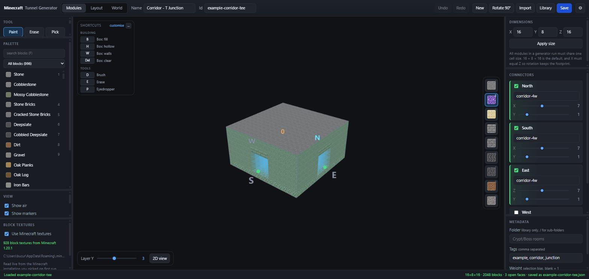
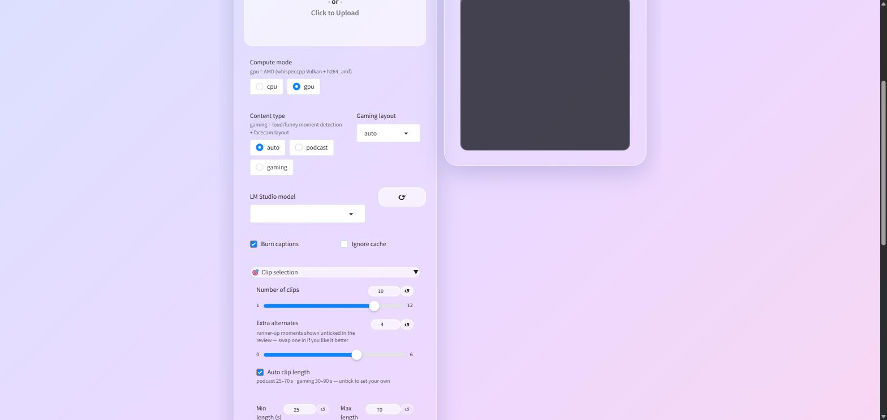
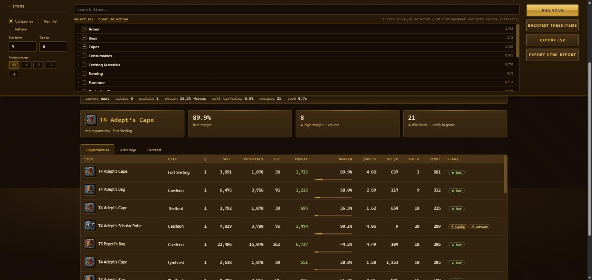
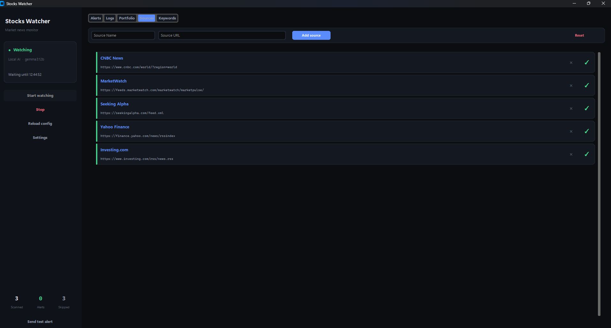
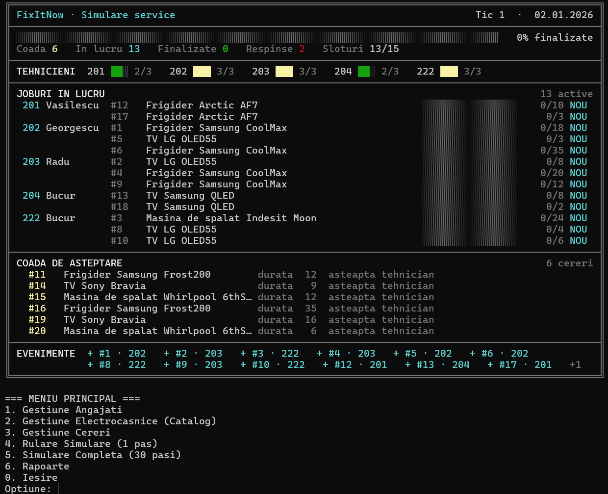
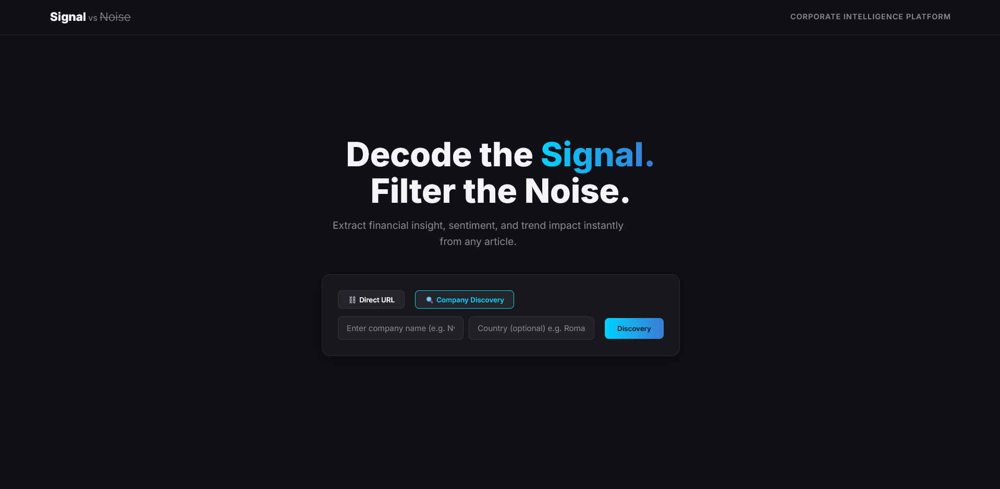
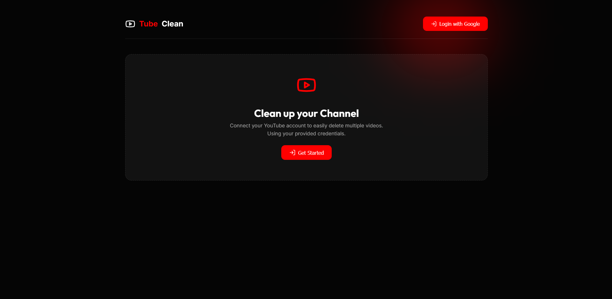

// hi, i'm
Computer Engineering Student & Content Creator
01 — ABOUT
I'm a Computer Engineering student at Politehnica Bucharest, passionate about applied AI, clean architecture, and software that actually gets used. Most of my projects started as problems I had and finished as tools I use and I'm always looking to expand what I know. From local-LLM pipelines and procedural world generation to full-stack desktop apps, I enjoy breaking down complex problems and turning ideas into reliable, well-crafted software.
Alongside university, I run a self-employed content business that I've grown to over 850k followers and 530M+ views. That means I've had to be my own engineer, analyst, and strategist: automating publishing and metadata with Python and JavaScript against the YouTube Data and Analytics APIs, reading performance data, and shipping consistently to a real audience.
What I bring to a team is that combination — the discipline to design a system end to end, and the product sense of someone who has watched millions of people react to their work.
02 — PORTFOLIO
Systems, pipelines, and tools built to solve problems I actually had — for a narrative Minecraft series, a trading habit, a university assignment, a hackathon, and a growing channel. Each one opens a full write-up with screenshots.

A 3D voxel editor for designing reusable tunnel modules, plus a Python generator that assembles them into a maze and writes it straight into a Minecraft world save.

A fully offline video-to-shorts pipeline: it transcribes, scores, and reframes the best moments of a long video into captioned 9:16 clips, entirely on-device.

Finds profitable crafting gaps in a live game economy, modelling the full profit chain and ranking them by a liquidity-weighted score.

Scans financial news, has a local LLM judge each article's market impact, and pushes a phone notification only when something genuinely matters.

Simulates running a home-appliance repair service end to end — hires staff, logs requests, and assigns technicians by skill and availability, tick by tick.

Hackitall 2 (P&G) entry: a corporate-intelligence pipeline that scrapes news about a company, scores how much to trust it, and maps supply-chain risk.

Four tools for running an 850K-subscriber channel without doing everything by hand in YouTube Studio — a desktop bulk manager plus three Python utilities.
03 — THE OTHER HALF
Since 2025 I've run YouTube channels as a registered self-employed business (PFA). I handle everything: production, analytics, and the toolkit I built to automate publishing and pull performance data via the YouTube Data and Analytics APIs.
It's taught me things no course does — how to read data honestly, iterate fast on real feedback, and keep shipping when the algorithm doesn't care about your excuses. It's also the reason half the projects on this page exist: ClipForge cuts the shorts, and the toolkit publishes them.
04 — TOOLKIT
What I work with, from low-level languages to the concepts underneath them.
05 — CONTACT
Looking for an internship where I can put both halves of my experience to work. If that sounds like a fit, reach out.